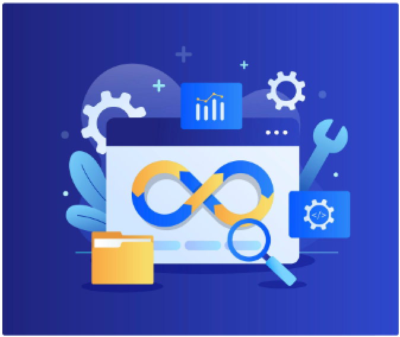
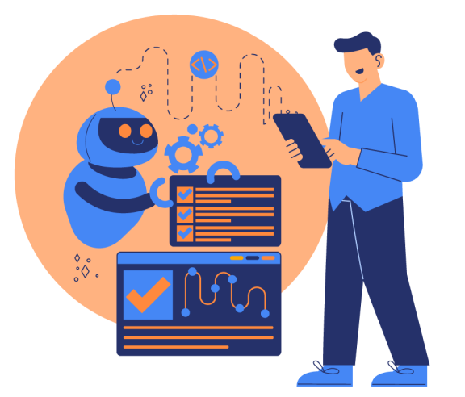
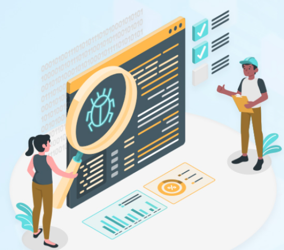

SoftTools
Maintenance Phase
The Maintenance Phase is post-deployment and involves sustaining the software's efficiency and relevance. It includes activities such as bug fixes, updates, and enhancements to adapt to evolving user needs. Ongoing support and monitoring are crucial for addressing emerging issues promptly and ensuring the software remains secure and optimized.
User feedback is actively incorporated to facilitate continuous improvement. This phase serves as the bridge between the deployment and future iterations, extending the software's lifecycle and maximizing its long-term value.

Bug Fixes

Bug Fixes
After deployment, promptly address any identified bugs to maintain software stability. Timely bug fixes are
crucial for ensuring optimal functionality and a smooth user experience. This proactive approach not only
resolves immediate issues but also contributes to the long-term reliability and performance of the software.
Regular monitoring and responsiveness to reported bugs are key practices in sustaining a high-quality software
system.
Different testings done in this Phase
View Tools
Regularly introduce updates and enhancements to the software to align with evolving user needs. By continuously
improving based on user feedback and changing requirements, the software remains responsive and relevant. This
iterative approach ensures that the product evolves in tandem with user expectations, fostering user
satisfaction and long-term usability. Embracing a dynamic update cycle enhances the software's features and
performance, contributing to its overall longevity and competitiveness in the market.
View Tools
Updates and Enhancements

Security Patching
Security Patching
Regularly assess and apply security patches to fortify the software against emerging threats. This proactive
measure is essential to ensure the ongoing security and resilience of the software, guarding against potential
vulnerabilities. By staying vigilant and promptly addressing security concerns, the software maintains a robust
defense mechanism, safeguarding sensitive data and maintaining user trust. This continuous commitment to
security patching is integral to mitigating risks and adapting to the ever-evolving landscape of cybersecurity
threats.
View tools
All rights reserved.
Terms Of Service
2021 SoftTools
Privacy Policy
Instagram
Facebook
About us
Linkedin
SDLC Tools
Contact
Twitter
Home
SoftTools